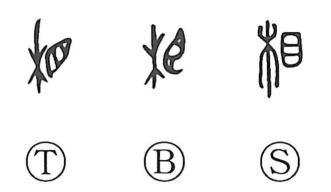

相

Kun: ai | On: sou, shou
mutual ・ to help ・ appearance ・ physiognomy
Explanation
相 places 目, an eye, beside 木, a tree. Its direct meaning is to look at the tree and examine it. Looking was also a way of entering into contact with the power of what was seen. Gazing at flourishing trees could be an act that stirred and renewed the spirit.
The act of looking develops into inspecting closely, judging, or choosing, including examining land for a place to live. What is seen also reveals an outward form, giving ‘appearance’ or ‘aspect.’
相 further carries senses of assisting and attending to another person, as well as acting with or toward a counterpart. These uses underlie mutual action and relationship.